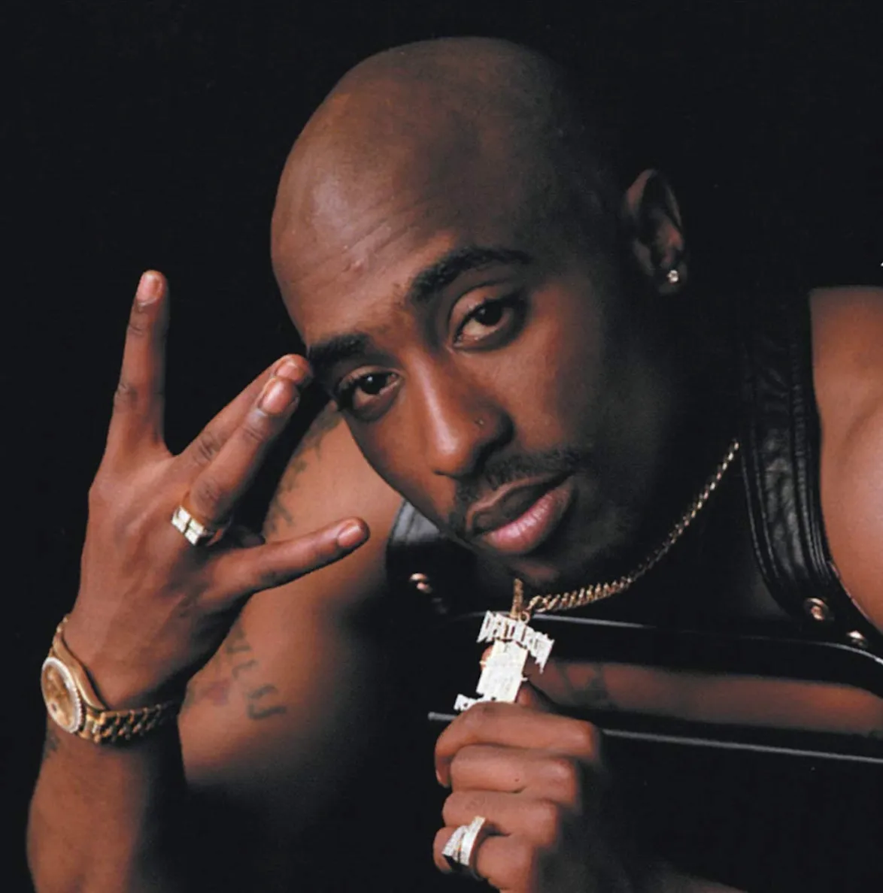

Tupac Shakur
25 anos
(1971 - 1996)
25 anos
(1971 - 1996)
TUPAC SHAKUR. In: WIKIPÉDIA, a enciclopédia livre. Flórida: Wikimedia Foundation, 2024. Disponível em: https://pt.wikipedia.org/w/index.php?title=Tupac_Shakur&oldid=68934923 Acesso em: 4 nov. 2024.
Tupac Shakur (Lesane Parish Crooks; 16 de junho de 1971 – 13 de setembro de 1996), conhecido como 2Pac ou Makaveli, foi um rapper, ator e ativista social americano, considerado um dos maiores e mais influentes rappers de todos os tempos. Com mais de 75 milhões de cópias vendidas mundialmente, suas canções abordavam temas como violência, racismo, desigualdade social e os desafios de crescer nos guetos.
Tupac iniciou sua carreira como roadie e dançarino antes de ganhar fama com o grupo Digital Underground. Mais tarde, se destacou como artista solo, mas enfrentou problemas legais, incluindo uma condenação por abuso sexual e uma rivalidade acirrada entre as costas Leste e Oeste do rap. Após sair da prisão com a ajuda de Suge Knight, gravou três álbuns pela Death Row Records.
Em 1996, Tupac foi baleado em Las Vegas e morreu seis dias depois, aos 25 anos. Em 2017, foi incluído no Hall da Fama do Rock and Roll, sendo o primeiro rapper solo a receber a honraria. Após sua morte, foi reverenciado como um dos maiores rappers da história.